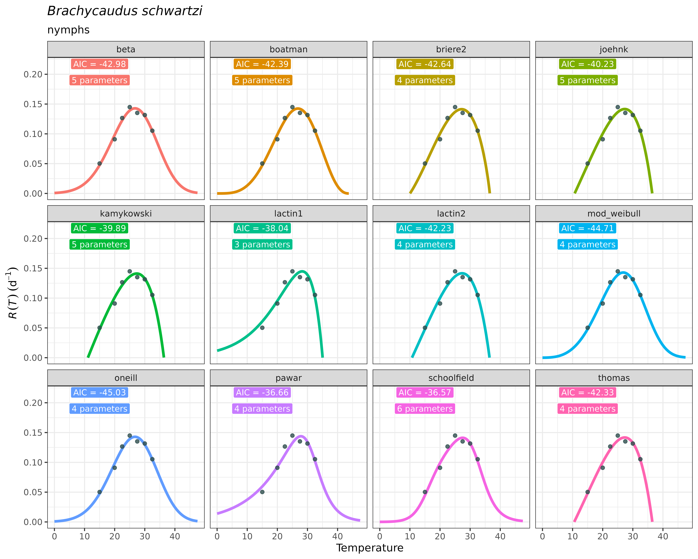

Fit a thermal performance curve (TPC) to your data:
The Thermal Performance Curves can be understood as models describing
the nonlinear temperature dependence of several biological rates (Amarasekare and Savage 2012). TPC shapes are
usually unimodal and left-skewed (Huey and
Stevenson 1979), which is also the case for development rate TPCs
of insects (Régnier, Legrand, and Rebaudo
2022). Fitting these nonlinear regression models requires to
incorporate a priori knowledge on model parameters. For that
purpose, the R packages rTPC (Padfield, O’Sullivan, and Pawar 2021; Padfield,
O’Sullivan, and Windram 2025)and devRate(Francois Rebaudo and Regnier 2025; François Rebaudo,
Struelens, and Dangles 2018) have provided R functions and
workflows to facilitate model fitting, start values selection and
parameter calculation of TPCs. Additionally, nls.multstart
package (Padfield, O’Sullivan, and Pawar 2021;
Padfield, Matheson, and Windram 2025) provides a nonlinear,
least-squares framework to facilitate fitting these curves to
experimental data in a flexible and efficient manner.
However, we believe that most researchers obtaining experimental data
on rate development across temperatures may not have enough R
programming knowledge to accomplish repeteadly the model fitting
procedure in reproducible workflows. Aiming to facilitate the usage of
these previous contributions made by the above-mentioned R packages to
TPC modelling for a broad-audience among experimental researchers,
mappestRisk aims to synthesize these software development
into an unique function called fit_devmodels().
This function takes for input a data.frame or
tibble containing two numeric columns: one with temperature
data –with at least 4 unique temperature treatments– and the other with
development rate data. The user can select which models to fit among
those included in available_models (or use them all). Then,
for each model equation, the function will search for the most
appropriate start values data for performing nonlinear regression models
using rTPC::get_start_vals() when possible, or
alternatively devRate parameter data set for models not
included in the former package. Once selected, the function will also
search for lower and upper thermal limits when possible using
rTPC::get_lower_lims() or
rTPC::get_upper_lims(). Next, the function performs
sequentially the nonlinear least-squares regression models using
nls.multstart::nls_multstart() function for each set of
model equation, start values and limits with default configuration of
nls_multstart approach (see function documentation here).
TPC models not achieving convergence are further discarded.
In this example, we’ll show how to fit one to several thermal
performance curves to a data set of development rate variation across
temperatures1. The following code provides an example as
given in fit_devmodels() function documentation, with a
data table showing the output of fitted models.
data("aphid")
fitted_tpcs_aphid <- fit_devmodels(temp = aphid$temperature,
dev_rate = aphid$rate_value,
model_name = "all")
#> By default, all models are fitted except `ratkowsky`, `mod_polynomial` and `wang` due to
#> unrealistic behavior at some TPC regions. If you still want to fit them, please write all model names manually
#> fitting model beta
#> fitting model boatman
#> fitting model briere1
#> Poorly informative start values for briere1 model
#> fitting model briere2
#> fitting model joehnk
#> fitting model kamykowski
#> fitting model lactin1
#> fitting model lactin2
#> fitting model mod_weibull
#> fitting model oneill
#> fitting model pawar
#> fitting model schoolfield
#> fitting model thomasAfter running fit_devmodels(), a tibble (a
specific case of data.frame) is created containing the most
relevant statistical information of the modelled TPCs: model name,
parameter information –name, estimates, standard error, AICs and listed
model objects.To continue the package workflow, this output must be
stored as an object (here we call it fitted_tpcs_aphid).
This tibble has the following aspect:
print(fitted_tpcs_aphid)
#> # A tibble: 53 × 8
#> model_name param_name start_vals param_est param_se model_AIC model_BIC
#> <chr> <chr> <dbl> <dbl> <dbl> <dbl> <dbl>
#> 1 beta a 0.145 0.143 0.00630 -43.0 -43.3
#> 2 beta b 25 26.7 1.10 -43.0 -43.3
#> 3 beta c 25 202. 13598. -43.0 -43.3
#> 4 beta d 2 100 12046. -43.0 -43.3
#> 5 beta e 2 32.6 2282. -43.0 -43.3
#> 6 boatman rmax 0.145 0.142 0.00648 -42.4 -42.7
#> 7 boatman tmin 15 0 104. -42.4 -42.7
#> 8 boatman tmax 32.5 43.7 66.7 -42.4 -42.7
#> 9 boatman a 1.1 1.42 1.03 -42.4 -42.7
#> 10 boatman b 0.4 2.44 20.0 -42.4 -42.7
#> # ℹ 43 more rows
#> # ℹ 1 more variable: model_fit <list>Despite the output yields a table with explicit statistical information and model objects with implicit additional information, selecting a model should better be guided by ecological, rather that only statistical criteria. This typically involves visualising the predictions of the fitted TPCs for further visual examination. A potential user of the package may use their expertise on thermal biology and ecology of the species to distinguish which of the fitted TPCs accomplish to approximate true temperature-development relationships. For example, a fitted TPC model yielding a critical thermal maximum beyond 50ºC –i.e., with a right-side vertical x-axis cutoff– may not be realistic, as most species do not encounter this temperatures. Similarly, models yielding quasi-symmetric TPCs or unexpected behaviors at some regions of the curve may also be further discarded. We strongly believe there is no a straightforward statistical strategy to select among TPC models; instead, comparing a large number of fitted TPCs with expertise ecological criteria may improve biological realism of model selection and reduce arbitrariety. Finally, accounting for the thermal regimes that the species will likely encounter in the region of interest to project risk may help select among curves by prioritizing curves with specific expected behaviors in theTPC regions corresponding to these thermal regimes.
The plot_devmodels() function facilitates quick
visualizations of predictions of the Thermal Performance Curves to guide
model selection under ecological criteria. It takes as an input the
resulting tibble/data.frame stored as an
object from fit_devmodels(). It has also arguments to title
and subtitle the figure with the species’ name and the life stage
evaluated, respectively. Since wrapped in the ggplot2
approach, customization is available by adding new lines with compatible
functions with ggplot2.
Following the previous example:
plot_devmodels(temp = aphid$temperature,
dev_rate = aphid$rate_value,
fitted_parameters = fitted_tpcs_aphid,
species = "Brachycaudus schwartzi",
life_stage = "nymphs")
As you can see, the plot is faceted across TPC models included in
fitted_tpcs_aphid.